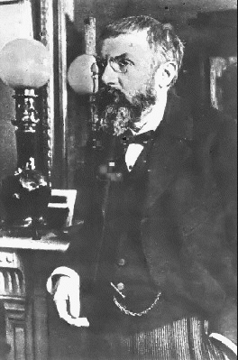

第一次，中国科技取得划时代的成就！
2006/6/4 19:23:04

中国科学当然曾取得过一些成就，但从未取得过划时代的成就，这一点，今已被彻底改变。所谓划时代的成就，举一个很简单的例子，像所有中国人都知道的陈景润，他在哥德巴赫猜想中取得的成就，在编写有关哥德巴赫猜想研究史时，当然会被大幅提及；而在编写20世纪解析数论史时，被提及的次数就会相应减少；在编写20世纪数论史时，基本被提及的话不会超过一句；可以很肯定地说，除非是编写中国自己的20世纪数学史，否则该成就在20世纪数学史的编写中被提及的可能基本没有；至于对20世纪的科学史，这种可能性就是零了。而科学中的划时代成就，就是当编写一个世纪的世界科学史时必须提及的成就，今天，中国科学第一次取得了这种级别的成就。
当然，像陈省身、丘成桐，他们已经取得了这种划时代的成就，像丘成桐，如果没有他，至少所谓的超弦理论、膜空间等物理学前沿就不是目前这种面目了。但由于他们的成就还是归于海外华人一类比较合适，因此在今天之前，中国科学确实没有取得过划时代的成就。当然，必须再次强调的是，这一切，在今天已经被彻底改变。
中科院理论物理所曾一直挂着这样一幅照片：1911年的布鲁塞尔，已经发表狭义相对论但四年后才发表广义相对论的爱因斯坦毕恭毕敬地站在一位坐着的老人后面，老人的名字就叫庞加莱。没有这位老人，至少拓扑学的出现与发展就要完全改变其历史，而拓扑学不仅仅是数学中最重要、最有活力的分支之一，其在理论物理等方面的意义，怎么评价都不过分。
区别于基本孤立地研究问题的近代数学，现代结构数学的核心问题就是利用各种同构关系对研究对象进行分类，从而形成一种宏观有力的研究力度与广度。对于拓扑学来说，最重要的当然就是拓扑分类的问题。无穷的图形，站在分类的角度，可能就只是归为少数的几类。分类方法的不同，当然就构成了研究的不同侧重。在拓扑中，最基本的就是站在同胚角度的分类，所谓的同胚，可以简单地理解为，就是站在拓扑的角度上无差别，而庞加莱猜想的严格数学表达就是：单连通的闭三维流型同胚于三维球面。换言之，无穷复杂的单连通的闭三维流型，站在拓扑的角度，都是和一个简单的三维球面无差别的。即使你对数学不熟悉，也应该看出，这是一个多么强力宏大的结论。任何一个对数学有一点了解的人都知道，庞加莱猜想就是也一直是拓扑学发展的中心问题。
当然，很自然就有了庞加莱猜想的推广。数学上的事情往往十分奇妙，大概所有人都觉得N越大，问题的解决越难。但实际上是，首先被解决的是N大于等于5的情况，然后是N等于4的情况，反而是最开始的三维情况一直不能被解决。今天，这个问题已经被中山大学朱熹平等二人彻底解决，这其中的意义当然不用多说了。
像上次英国人解决费玛猜想一样，证明中是否也会出现一些需要进一步解决的问题，这还要等待今后一到两年全世界数学家的检验，上次英国人被挑出毛病后最终也解决了，算是虚惊一场，这次的情况怎样，现在该证明已发表在最新一期《亚洲数学期刊》杂志上，共300多页，能看懂的人都可以一起去挑刺的。当然，全世界能看懂的人，一定是比能吃馒头或能看密码的人少得多了，而对于能看懂的人，这绝对是世界上最美妙的乐章之一，就像费玛猜想的证明，每一页都是人类智力的最高咏赞。
中国人第一次解决了世界性基础科学中的中心问题，是中国最终成为科学技术大国进程中具有里程碑意义的事件。但中国毕竟还没有牛顿、没有爱因斯坦，没有庞加莱，而只有当中国不仅解决，还能提出划时代意义的问题，进一步能创造改变科学研究方向的新学科，特别是能取得扭转人类思维、观察基本模式的伟大建树，中国才能真正成为科学技术大国。当然，现在，至少在世界科学界，以后可以这样介绍中国了：她，是一个最终解决庞加莱猜想的国度。当然，前提是，这300多页的证明在今后一两年内都被证明是绝对完美的！